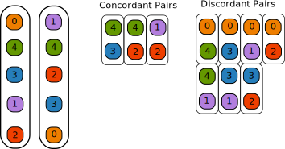

The Kendall Tau Distance between Two Rankings, And Kemeny-Optimal Rank Aggregation
Chris Tralie
Rankings
Our goal below is to build to an algorithm that computes an "average ranking" that makes sense from a set of rankings. Such algorithms can be thought of as addressing a final order in ranked choice voting elections.
Kendall-Tau Distance
The Kendall Tau distance is a way of comparing two rankings of items by counting the number of pairs that occur in a different order between the two rankings. Each such pair is known as a "discordant pair," while pairs that agree are known as "concordant pairs." For example, consider the following two rankings of the numbers 0-4:
0, 4, 3, 1, 2
1, 4, 2, 3, 0
The image below shows that there are 7 discordant pairs out of all possible 10 pairs in this example. Therefore, the Kendall-Tau distance between them is 7.
In general, if two rankings are the exact reverse of each other, the Kendall-Tau distance will be maximized, and if they are exactly the same, the Kendall-Tau distance will be 0. For 5 items, the maximum distance is 10 (since there are 10 pairs in 5 items), so the above example reflects two rankings which are quite different.
For simplicity, we'll consider ranking the numbers from 0, 1, ..., N-1, since we could number N items each set in an arbitrary but consistent way.
Efficiently Computing The Kendall-Tau Distance
A brute force way to compute the Kendall-Tau distance to compare the order of every pair between the two rankings. A ranked choice of N items, this is N(N-1)/2 pairs to check, which is O(N2) checks. We can do better, however, by exploiting sorting algorithms. In algorithms jargon, we reduce the Kendall-Tau distance to comparison-based sorting. Since we know such algorithms that run in worst-case O(N log N) time, we can beat the naive O(N2) scheme we get from following the definition too literally. For example, let's again consider the following two rankings
0, 4, 3, 1, 2
1, 4, 2, 3, 0
If we relabel the numbers so that the first list is strictly ascending, aka using the following relabelings
- 0 stays at 0
- 4 becomes 1
- 3 becomes 2
- 1 becomes 3
- 2 becomes 4
Then we get the following lists
0, 1, 2, 3, 4
3, 1, 4, 2, 0
Then, we can simply count the number of inversions in the second list. An inversion is a pair of numbers which is in the wrong order. In the above example, we see that the pairs (3, 1), (3, 2), (3, 0), (1, 0), (4, 2), (4, 0), (2, 0). There are 7 total inversions, which matches the Kendall-Tau distance we computed.
Since inversions consist of pairs that are out of order, we can count them by putting the numbers in this list into order via a sorting routine. One way is to simply count the number of swaps that insertion sort does to put that list in order. This correctly computes the Kendall-Tau distance, but it takes O(N2) time in the worst case (since there can be up to N*(N-1)/2 discordant pairs if the lists are the reverse of each other). The one advantage of this technique is that we're only using O(N) memory, whereas a more naive technique may have actually stored all O(N2) pairs in memory for one to check against the other.
If we think a little harder, though, we can also reach the O(N log N) computational worst case bound by shoehorning the merge sort algorithm, which is O(N log N) in the worst case, into counting the number of inversions. Let's now construct such an algorithm and prove its correctness as we go. Somehow, we will have to count multiple inversions in a single step to avoid the O(N2) worst case. Recall that the merge sort algorithm looks as follows (ignoring the base case for brevity)
Up to this point, we've simply had merge sort operate on arr by reference, but we can also have it return the number of inversions it detected. If we do this, we can recursively compute the inversions as
In other words, we recursively count the inversions it took when we were sorting the first half and second half, and then we count the remaining inversions that occur when we merge them together.
Just as when we were doing the sorting, the challenge / meat of the work here becomes to count the inversions in the merge step. Review the code you wrote in lab 5, and recall that the first loop in the merge step keeps track of an index i on the left half and an index j on the right half, as show below:One possibility is that all of the elements on the left side are less than all of the elements on the right side, in which case everything is sorted already. The first merge loop will then take all of the elements from the left, incrementing i until we get up to mid. It follows, then, that picking an index from the left side should not add any inversions.
However, if at a particular iteration of this loop we take the element at index j on the right side as the next element that we merge in, then that means that x[j] is less than everything between index i and index mid, since the left hand side is sorted. Thus, if we pick x[j] to go next, then we must add mid-i+1 to the total number of inversions resolved while merging. And that's it! The last two loops simply fill out items that are already in order that are left.
Kemeny Optimal Rank Aggregation
Now that we have developed the Kendall-Tau distance to measure the dissimilarity of a pair of rankings, we can define a Kemeny Optimal Ranking over a set of M rankings to complete the election. A Kemeny Optimal rank has the very nice property of being a Condorcet method, which means that the candidate who gets the first spot would always win the majority vote in a head-to-head election against any of the other candidates, based on the rankings that were submitted.
A Kemeny Optimal ranking minimizes the sum of the Kendall-Tau distances to all M rankings. In other words, it is a ranking which minimizes pairwise disagreements between all people who voted. As it turns out, it is provably hard to compute this distance exactly, but you will work on a brute force recursive algorithm to achieve this, and to compare it to more efficient, approximate answers.
Pseudocode for the brute force algorithm is roughly